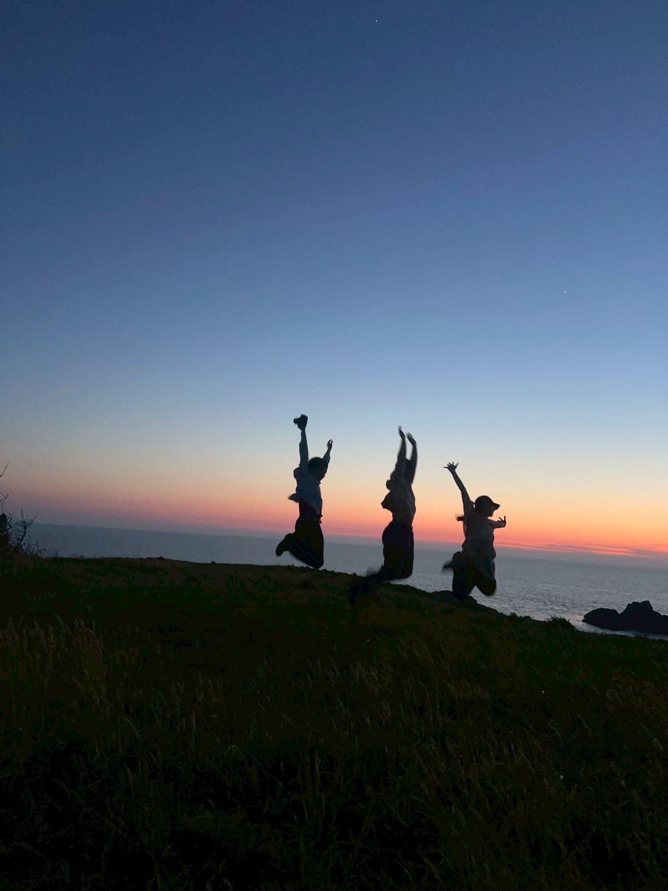
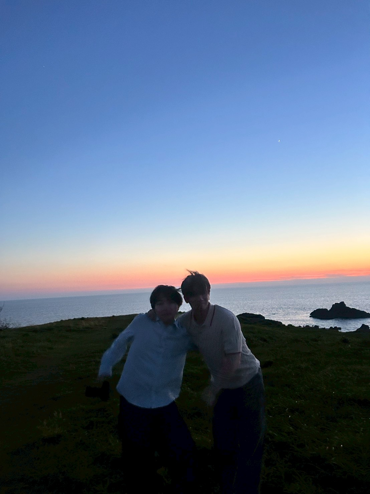

03 / YUYAKE
宿近くの夕陽。
小木港から北上したあと、宿の近くで見た海と空の時間。yuyake はそのまま夕焼けの記録。



NOTE
観光地名ではなく、旅の途中に差し込まれた一場面。宿と海の間にある、今回の記録のやわらかい山場。
小木港から北上したあと、宿の近くで見た海と空の時間。yuyake はそのまま夕焼けの記録。


観光地名ではなく、旅の途中に差し込まれた一場面。宿と海の間にある、今回の記録のやわらかい山場。